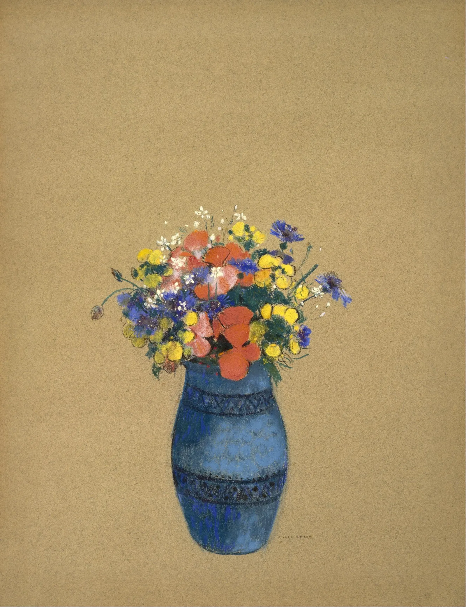
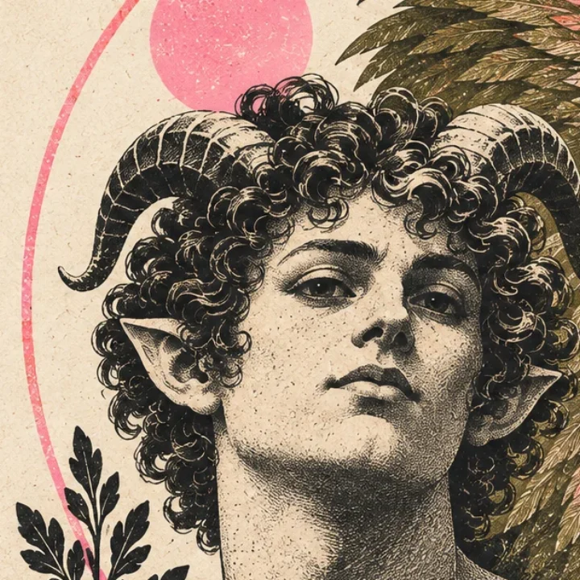
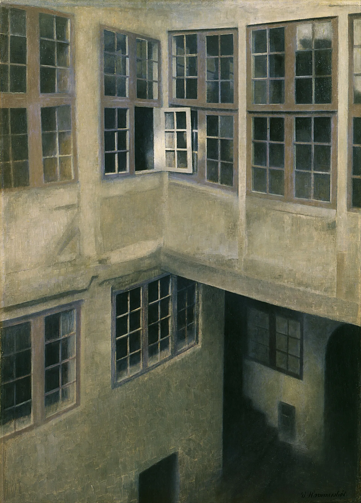

eidosmoodboard discover
a living moodboardwhat you keep
what you keep
becomes you.
paintings and posters you chose, still changing with every choice.

Three real product states at 390px: identity, discovery and the rare second ink pass. Nothing depends on a desktop crop or a prerecorded clip.
paintings and posters you chose, still changing with every choice.


